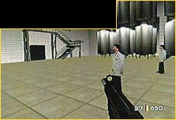
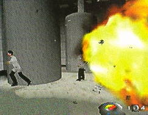

|
.
| Goldeneye
Version Beta : Facility |
| Les
Objectifs de Facility n'ont pas changé apperemment, mais au
Niveau des Armes, y a eu des petites modifications comme vous allez
le voir. La Salle qui a le plus changé visuellement, c'est
la Salle des Reservoirs que l'on fait sauter à la Fin. Notez
qu'il y avait 2 Niveaux de Reservoirs, donc 2 fois plus de trucs à
faire exploser. Y avait des Scientifiques dans cette Salle, et Bond
avait un D5K Deutsche ! De plus, on voit que les Mines sont des Timed
Mines, comme dans le Film !! Réaliste au possible !! |


